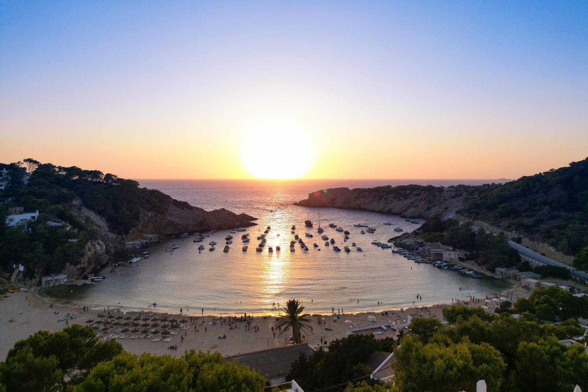
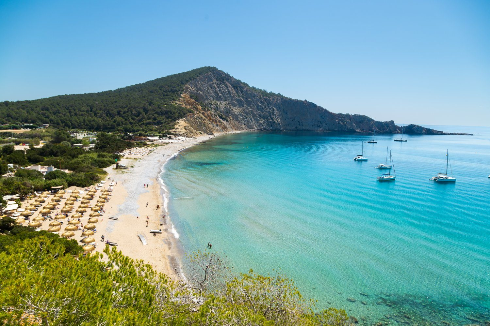
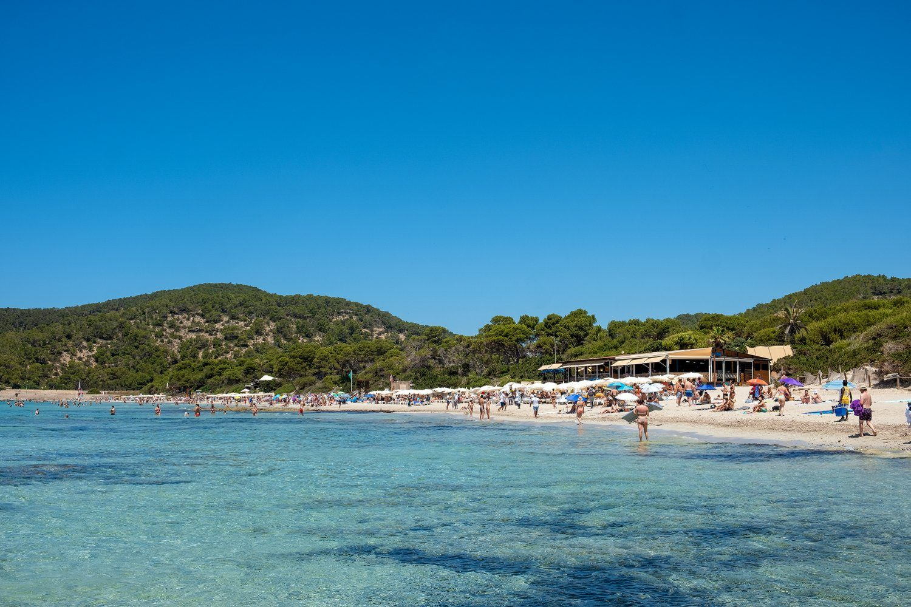
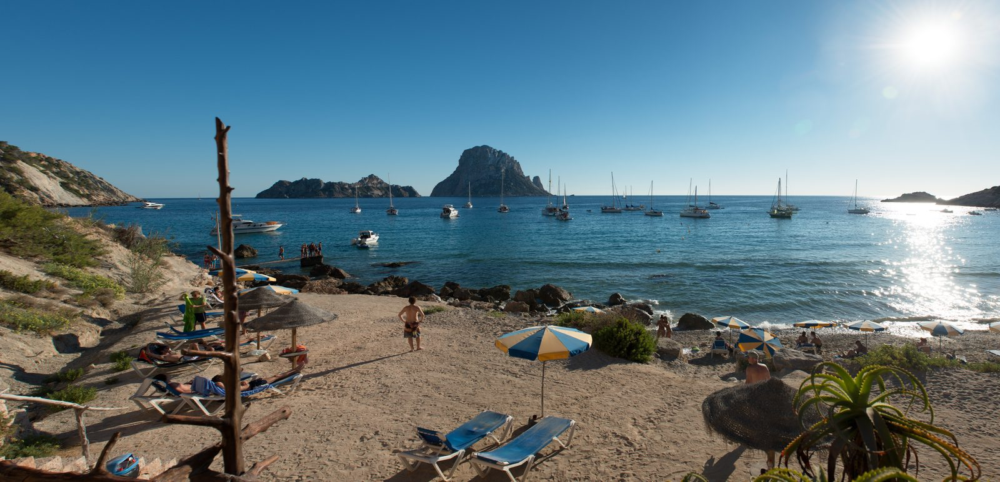
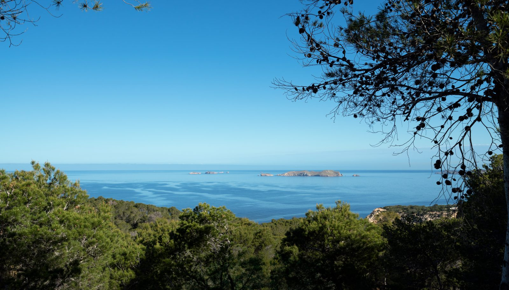
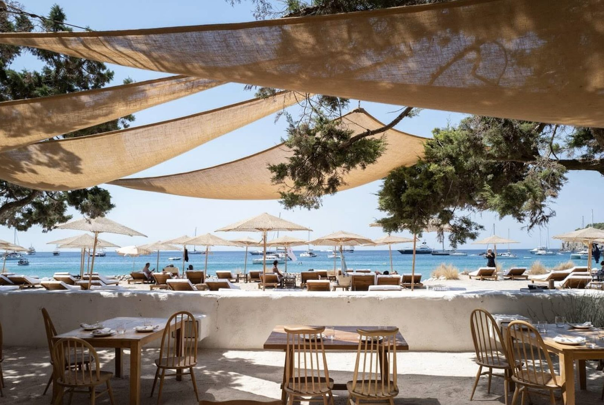
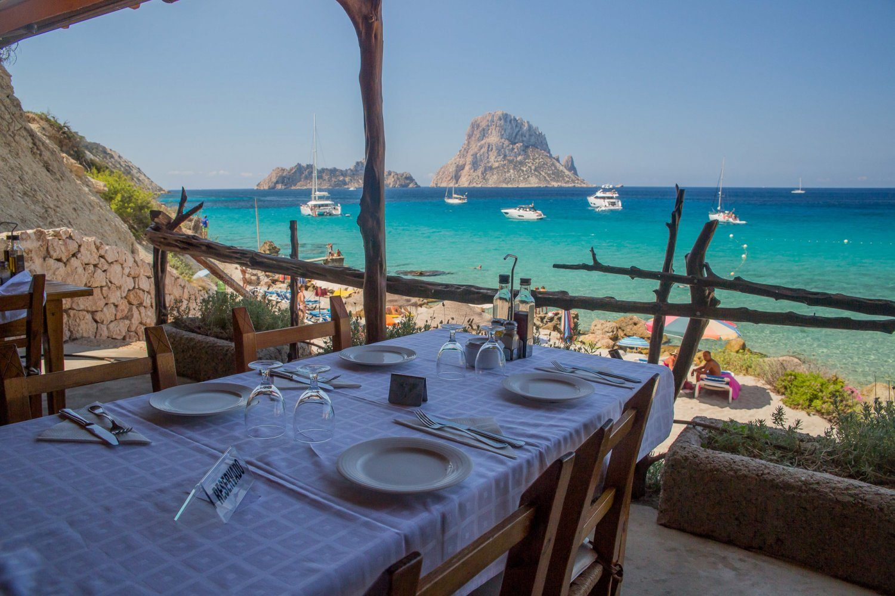
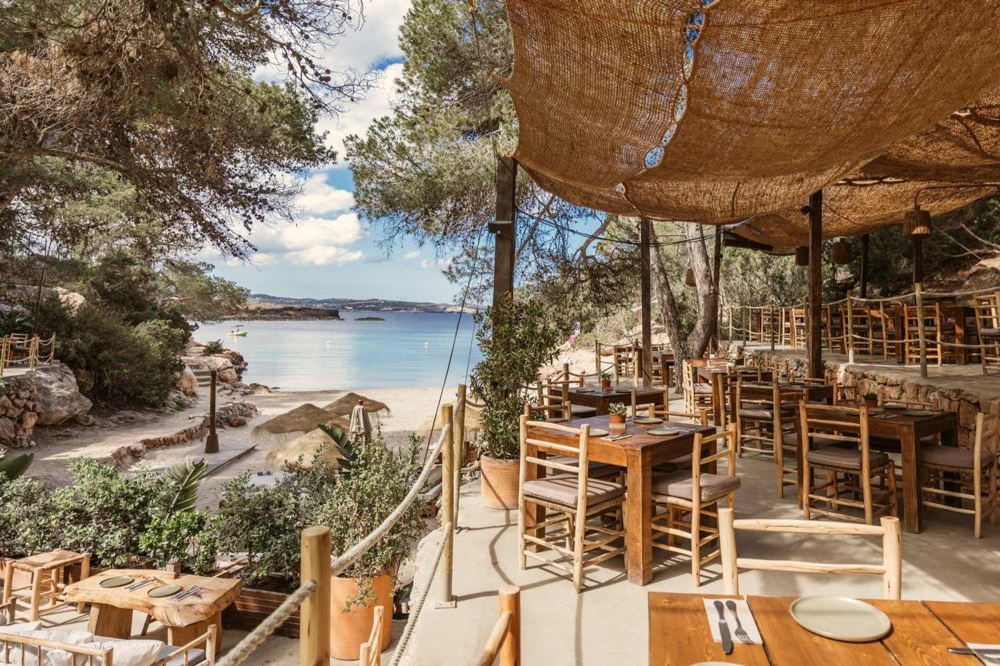

Villa in zuidwest-Ibiza — Cala Vadella op loopafstand, Es Vedrà op 5 minuten
Tien minuten lopen naar het strand. Vijf minuten rijden naar Es Vedrà. Het mooiste deel van het eiland.
Vanaf Can Beteigeuze

Cala Vadella
Een van de mooiste baaien van Ibiza — een beschutte hoefijzervorm met rustig turquoise water, fijn wit zand en een achtergrond van met pijnbomen begroeide kliffen. Het water is ondiep en veilig, perfect voor kinderen. Ligstoelen en parasols te huur, en meerdere heerlijke restaurants direct aan het strand voor een lange, ontspannen middag.
In de zomer stromen er bezoekers op af die er jaar na jaar terugkomen — en als je het ziet bij golden hour, met zeilboten in de baai en de hele inham die amber kleurt, begrijp je waarom. Tien minuten lopen van de voordeur van de villa.
"We hebben geen privézwembad één dag gemist. Cala Vadella is gewoon om de hoek — en het is prachtig." — Sophie & Mark, VK · Vrbo 10/10


Es Vedrà
De iconische zeepijler die uit de oceaan rijst, ten zuiden van Cala Vadella. Bij zonsondergang kleurt hij goud, dan rood. Een van de spectaculairste uitzichten in de Middellandse Zee — en op een heldere dag zichtbaar vanuit het villaras.
Ga bij zonsondergang. Kom anders terug.

Eindeloze stranden
De kust rondom de villa biedt meer variatie dan je in een week kunt ontdekken. Van wilde rotsige baaien tot brede zandstranden — elke dag een ander strand.

Cala d'Hort
Wild en ongerept, met direct zicht op Es Vedrà dat uit de zee oprijst. Het meest dramatische strand in het zuidwesten — ga er zeker één keer naartoe.

Cala Tarida
Een breed, zandig familiestrand met ondiep water en een beach club. Een van de grootste baaien aan de westkust, voelt nooit te druk.

Cala Conta
Meerdere kleine inhammen met kristalhelder water en legendarische zonsondergangen. De rit is de moeite waard — dit is een van de mooiste plekken op het eiland.
En verder: Cala Bassa, Cala Gracioneta, Cala Molí, Cala Llentrisca, Es Cavallet, Ses Salines — meer dan je in een week kunt verkennen.
Beach clubs & restaurants
De westkust heeft een aantal van de beste plekken op Ibiza om te eten en een lange middag door te brengen.

Chiringuito de Jondal
Tafels onder linnen baldakijnen, verse vis, koude wijn, de zee pal voor je. Klassieke Ibiziaanse strandervaring. Reserveer van tevoren.

Es Boldado, Cala d'Hort
Klitterrasterras boven Cala d'Hort met volledig zicht op Es Vedrà. Zeevruchten, rijstgerechten, legendarische zonsondergangen. Ruim van tevoren reserveren.

Cala Gracioneta
Een kleine, intieme inham bij Sant Antoni met een prachtig terrasrestaurant aan het water. Ontspannen sfeer, uitstekend eten.
Alles binnen handbereik
Zuidwest-Ibiza — het rustige, mooie deel. De zee, de stranden en de beste restaurants op minuten afstand.
Onze persoonlijke favorieten
Dit zijn de plekken die wij elke gast aanraden. De meeste staan niet in een reisgids.
Cala d'Hort
Ga bij golden hour en blijf tot het laatste licht op Es Vedrà vervaagt. Kom vroeg — de parkeerplaats raakt in de zomer snel vol.
Es Boldado, Cala d'Hort
Onze favoriete tafel op het eiland. Vraag om het buitenterras en reserveer in juli en augustus minstens twee weken van tevoren.
Cala Conta
Twintig minuten rijden, maar de zonsondergang hier is iets heel anders. Ga één keer.
Las Dalias, San Carlos
De hippymarkt op zaterdagochtend. Authentiek, artistiek, vol leven.
Dalt Vila, Ibiza-stad
De ommuurde oude stad bij zonsondergang. Loop de wallen, vind een terras, drink iets.
Cala Llentrisca
Je moet twintig minuten lopen om er te komen. Elke stap waard. Weinig mensen kennen het.
Klaar om te boeken?
Bekijk beschikbaarheid, tarieven en boek direct bij de eigenaar.